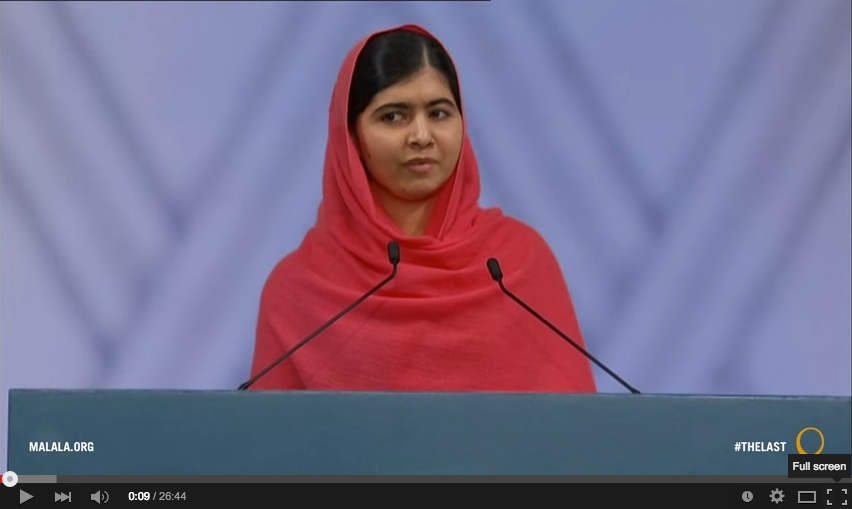

11.1 Aprendizagem aberta


Discurso do Prêmio Nobel de Malala Yousafzai, 2014. Clique na imagem para assistir ao discurso.

Em anos recentes, assistiu-se a um ressurgimento do interesse pela aprendizagem aberta, impulsionado predominantemente pelos recursos educacionais abertos e pelos MOOCs. Embora os recursos educacionais abertos (REA) e os MOOCs constituam desenvolvimentos relevantes, tendem a ofuscar outras dinâmicas da educação aberta que produzirão, previsivelmente, maior impacto no ensino em geral. Torna-se, por isso, necessário recuar para obter uma compreensão mais ampla da aprendizagem aberta como um todo. Este enquadramento apoiará a análise do significado dos MOOCs, dos REA e de outros avanços na educação aberta, bem como o seu impacto no ensino e na aprendizagem no presente e no futuro.
11.1.1 A educação aberta como conceito
A educação aberta pode assumir diversas configurações:
- educação para todos: ensino escolar ou superior gratuito ou de custo residual acessível a qualquer cidadão de um determinado território, financiado predominantemente pelo Estado;
- acesso aberto a programas que conferem qualificações formais reconhecidas. São oferecidos pelas universidades abertas nacionais ou, mais recentemente, pela rede OERu;
- acesso aberto a disciplinas ou programas que não conferem créditos formais, embora permitam a obtenção de insígnias (badges) ou certificados de conclusão. Os MOOCs constituem um exemplo claro;
- recursos educacionais abertos que docentes ou estudantes podem utilizar de forma livre e gratuita. O OpenCourseWare do MIT, que disponibiliza gravações de vídeo de aulas e materiais de apoio para descarregamento gratuito, constitui um exemplo;
- livros didáticos abertos (open textbooks), manuais escolares on-line de utilização livre e gratuita para os estudantes (como esta própria obra);
- pesquisa aberta (open research), mediante a qual artigos e estudos científicos são disponibilizados on-line para descarregamento gratuito (ver, por exemplo, o portal Open Research Central);
- dados abertos (open data), ou seja, dados acessíveis a qualquer pessoa para utilização, reutilização e distribuição, sujeitos unicamente à atribuição de autoria e partilha sob licença equivalente (ver, por exemplo, o Open Data Bank do Banco Mundial);
- pedagogia aberta, uma metodologia de ensino e aprendizagem assente nos princípios da abertura e da participação ativa do aprendiz.
Cada um destes desenvolvimentos é analisado detalhadamente neste capítulo, com exceção dos MOOCs, cuja abordagem foi desenvolvida no Capítulo 5.
11.1.2 Educação para todos — exceto no ensino superior
A educação aberta constitui essencialmente um objetivo ou uma diretriz de política educativa. A característica fundamental da educação aberta assenta na eliminação de barreiras à aprendizagem. Traduz-se na ausência de requisitos de qualificações prévias para o estudo, na inexistência de discriminação por gênero, raça, idade ou convicção religiosa, na acessibilidade econômica geral e no esforço deliberado de disponibilizar o ensino em formatos adequados para superar limitações de estudantes com deficiência (ex.: audiolivros para alunos com deficiência visual). Idealmente, a ninguém deve ser vedado o acesso a um programa educativo aberto. Deste modo, a aprendizagem aberta deve ser escalável a par de flexível.
11.1.2.1 Escolas públicas financiadas pelo Estado
A escolaridade pública financiada pelo Estado direcionada a crianças entre os 5 e os 16 anos (ou 18 anos em determinados países) representa a expressão mais ampla e disseminada da educação aberta. Por exemplo, a aprovação da Lei da Educação de 1870 pelo Parlamento britânico estabeleceu o enquadramento para a escolarização de todas as crianças entre os 5 e os 13 anos em Inglaterra e no País de Gales. Embora se registasse a cobrança de propinas residuais aos pais, a lei instituiu o princípio de que a educação seria financiada predominantemente por impostos, salvaguardando que nenhuma criança seria excluída por motivos econômicos. A gestão das escolas cabia a conselhos escolares locais eleitos (Living Heritage).
Com o tempo, o acesso à educação pública gratuita expandiu-se na maioria dos países desenvolvidos de modo a abranger os jovens até aos 18 anos. A iniciativa Educação para Todos (EFA) da UNESCO constitui um compromisso global para assegurar educação básica de qualidade a todas as crianças, jovens e adultos, subscrito, pelo menos em termos formais, por 164 governos nacionais. No entanto, subsistem atualmente mais de 250 milhões de crianças e jovens fora do sistema de ensino a nível mundial (UNESCO, 2018), representando cerca de um em cada cinco.
11.1.2.2 Ensino superior
O acesso ao ensino pós-secundário ou superior tem-se apresentado mais condicionado do que o acesso à escola básica, quer por motivos de ordem financeira, quer por critérios de "mérito" acadêmico. As universidades exigem aos candidatos a demonstração de padrões de desempenho validados por exames nacionais ou provas de ingresso das próprias instituições. Esta lógica permite às universidades de prestígio operar processos de seleção exigentes.
Contudo, no período pós-Segunda Guerra Mundial, a procura por uma população qualificada por motivos sociais e econômicos traduziu-se na expansão gradual das universidades e do ensino superior na generalidade dos países desenvolvidos. Na maioria dos países da OCDE, cerca de 35% a 60% de uma coorte etária ingressa em alguma modalidade de ensino superior. Na era digital, assiste-se a uma procura crescente por profissionais qualificados, constituindo o ensino pós-secundário uma etapa de passagem necessária para aceder às melhores carreiras profissionais. Deste modo, regista-se pressão para a gratuitidade e para o acesso aberto pleno ao ensino superior.
11.1.3 O custo do alargamento do acesso
No entanto, conforme analisamos no Capítulo 1, a expansão do acesso a contingentes crescentes de estudantes traduz-se em pressões financeiras para os governos e contribuintes. Na sequência da crise financeira de 2008, diversos estados norte-americanos depararam-se com dificuldades orçamentais, o que resultou em cortes de financiamento nas universidades públicas dos EUA (ver, por exemplo, Rivera, 2012), promovendo o aumento das propinas cobradas aos estudantes.
Delineia-se uma correlação entre o surgimento de iniciativas de educação aberta, como os MOOCs e os REA, e o período de retração nos investimentos públicos no ensino superior nos EUA. As tutelas governamentais e as instituições de ensino procuram soluções que permitam expandir o acesso sem uma progressão equivalente dos investimentos orçamentais ou das propinas. É neste enquadramento que se situa o interesse renovado pelas dinâmicas da educação aberta.
11.1.3 O acesso aberto no ensino superior
11.1.3.1 Universidades abertas
Nas décadas de 1970 e 1980, assistiu-se a uma progressão rápida no número de universidades abertas que dispensavam qualificações formais para admissão. No Reino Unido, por exemplo, em 1969, menos de 10% dos jovens que concluíam o ensino secundário ingressavam no ensino superior. Foi neste período que o governo britânico fundou a Open University, uma instituição de ensino a distância aberta a todos os cidadãos, recorrendo à combinação de manuais impressos desenhados de raiz com transmissões televisivas e radiofónicas, associadas a estágios residenciais de uma semana em campi de universidades convencionais para as disciplinas propedêuticas (Perry, 1976; Weinbren, 2015).
A Open University iniciou o funcionamento em 1971 com uma turma de 25.000 estudantes e conta hoje com mais de 200.000 alunos matriculados. A instituição tem figurado no grupo das dez melhores universidades do Reino Unido no plano pedagógico e entre as 30 melhores em termos de investigação científica nas avaliações das agências públicas de qualidade, liderando os índices de satisfação dos estudantes (entre mais de 180 instituições) (Weinbren, 2015). Contudo, a universidade já não assegura a cobertura integral dos custos através de dotações estatais, registando-se a cobrança de propinas diversificadas. Paralelamente, o acesso ao ensino superior expandiu-se, com cerca de 50% dos jovens a ingressarem em cursos superiores no Reino Unido (UK Department of Education, 2018).
Identificam-se atualmente cerca de uma centena de universidades abertas públicas a nível mundial, incluindo instituições no Canadá (Athabasca University e Téluq). Estas organizações caracterizam-se pela sua grande dimensão: a Open University da China conta com mais de um milhão de estudantes de graduação e 2,4 milhões de alunos do ensino secundário; a Universidade Aberta de Anadolou, na Turquia, ultrapassa 1,2 milhões de inscritos na graduação; a Universidade Aberta da Indonésia (Universitas Terbuka) conta com cerca de meio milhão e a Universidade da África do Sul (UNISA) atende 350.000 estudantes. Estas instituições prestam um serviço relevante a milhões de cidadãos que carecem de outros canais de acesso ao ensino superior (ver Daniel, 1998, e a síntese da Contact North, 2019).
11.1.3.2 Alternativas às universidades abertas
Importa notar a ausência de uma universidade aberta pública de âmbito federal nos EUA, fator que explica a atenção dispensada aos MOOCs nesse país. A Western Governors' University constitui a estrutura mais próxima deste modelo, sendo este segmento igualmente ocupado por universidades privadas com fins lucrativos como a University of Phoenix.
A par das universidades abertas nacionais, destaca-se a rede OERu, um consórcio internacional de universidades e colégios (predominantemente da Commonwealth e dos EUA) que disponibiliza cursos em acesso aberto. O modelo permite aos aprendizes obter créditos transferíveis para as instituições parceiras ou estruturar o percurso para a obtenção de um diploma emitido pela instituição na qual reúne a maior parte dos créditos. Os estudantes pagam uma taxa associada às avaliações formais.
11.1.4 Limitações da aprendizagem aberta
A aprendizagem aberta, flexível e on-line raramente se apresenta na sua formulação conceitual pura, registando-se graus de abertura (sendo necessárias, no mínimo, competências básicas de alfabetização). A abertura condiciona as opções tecnológicas da instituição: caso o mandato assente no acesso universal, devem priorizar-se tecnologias acessíveis à generalidade dos cidadãos. Se a instituição opta por processos seletivos de admissão, dispõe de maior latitude na escolha das ferramentas (ex.: exigir a posse de computador pessoal e ligação rápida à internet para frequentar disciplinas on-line). As universidades abertas tendem a apresentar maior cautela na adoção de tecnologias de última geração.
Apesar dos contributos das universidades abertas, estas instituições debatem-se por vezes com questões de prestígio em relação às universidades presenciais convencionais. As taxas de conclusão de curso apresentam-se frequentemente baixas (a taxa de conclusão da Open University britânica situa-se em 22% — Woodley e Simpson, 2014 —, valor que é, contudo, superior ao verificado nas taxas de conclusão de MOOCs individuais).
Finalmente, diversas universidades abertas com percursos de mais de 40 anos evidenciam dificuldades de adaptação rápida à evolução tecnológica, quer devido à sua grande dimensão e investimento em infraestruturas tradicionais (como a imprensa própria e sistemas de transmissão televisiva), quer pelo princípio de não exclusão de estudantes que não disponham de tecnologias recentes.
Deste modo, as universidades abertas enfrentam o desafio decorrente da expansão do acesso ao ensino superior geral e da generalização da oferta on-line por parte das universidades convencionais. No Canadá, por exemplo, a maioria das universidades e colégios públicos disponibiliza disciplinas totalmente on-line (embora o ingresso permaneça sujeito a qualificações prévias) (Donovan et al., 2018). O desenvolvimento de REA e MOOCs constitui um desafio adicional para este segmento.
Referências
Contact North (2019) Searchable Directory of More than 65 Open Universities Worldwide Sudbury ON: Teachonline.ca
Daniel, J. (1998) Mega-Universities and Knowledge Media: Technology Strategies for Higher Education. London: Kogan Page
Donovan, T. et al. (2018) Tracking Online and Distance Education in Canadian Universities and Colleges: 2018 Halifax NS: Canadian Digital Learning Research Association
Living Heritage (undated) Going to school: the 1870 Education Act, London: UK Parliament
Perry, W. (1976) The Open University Milton Keynes: Open University Press
Rivera, C. (2012) Survey offers dire picture of California’s two-year colleges Los Angeles Times, August 28
U.K. Department of Education (2018) Participation Rates in Higher Education: Academic Years 2006/2007 – 2017/2018 (Provisional) London: Department of Education HE Statistics
UNESCO (2014) Education for All, 2000-2015: achievements and challenges Paris FR: The UNESCO 2015 EFA Global Monitoring Report team
UNESCO (2018) One in Five Children, Adolescents and Youth is Out of School Paris FR: UNESCO Institute for Statistics Fact Sheet No 42
Weinbren, D. (2015) The Open University: A History Manchester UK: Manchester University Press/The Open University
Woodley, A. and Simpson, O. (2014) ‘Student drop-out: the elephant in the room’ in Zawacki-Richter, O. and Anderson, T. (eds.) (2014) Online Distance Education: Towards a Research Agenda Athabasca AB: AU Press, pp. 508
Atividade 11.1 O acesso ao ensino superior deve ser totalmente aberto a todos?
- O acesso ao ensino superior deve ser aberto a qualquer cidadão? Em caso afirmativo, quais as limitações legítimas a este princípio? Qual deve ser o papel das tutelas públicas para viabilizar esta abertura? Em caso negativo, qual o motivo para justificar a abertura da escolaridade básica mas não do ensino superior? Trata-se unicamente de uma questão financeira ou existem outras razões?
- As universidades abertas mantêm relevância na era digital?